DATA CURATION NETWORK
Data Curation Workshop
Timothy Norris - tnorris@miami.edu
James Sobczac - jsobczak@miami.edu
Cameron Riopelle - criopelle@miami.edu
University of Miami Libraries - July 2 2019
James Sobczac - jsobczak@miami.edu
Cameron Riopelle - criopelle@miami.edu
University of Miami Libraries - July 2 2019
Learning Outcomes
- Increase understanding of data curation practices and tools in various disciplines, data types, and formats.
- Share expertise and enhance curation capacity for librarians at the University of Miami.
- Meet like-minded colleagues who are interested in building and extending curation practices at UM.
Research data have value beyond their original purpose, but…
- There is a lot of data.
- Data can be messy and incomprehensible (lack context!)
Research data have value beyond their original purpose, but…
- There is a lot of data.
- Data can be messy and incomprehensible (lack context!)
- Digital file formats are constantly at risk
Research data have value beyond their original purpose, but…
- There is a lot of data.
- Data can be messy and incomprehensible (lack context!)
- Digital file formats are constantly at risk
- Most data never leaves their author’s laptop ⇒ benign neglect
Incentives for sharing data strengthen the need for better curation
- Funding mandates
- Publisher data sharing policies (PLoS and Nature)
- Reproducibility => standardized practices around data pipelines and replication studies
- Retraction Watch (stick) and Open Data movement (carrot) helps safeguard against scientific fraud or the dissemination of erroneous results
What is data curation?
“The encompassing work and actions taken by curators of a data repository in order to provide meaningful and enduring access to data.”
Data Curation Network: Data Curation Terms & Activities. http://hdl.handle.net/11299/188638
Remember… data curation is just one piece of the broader data services landscape

Kouper, I., Fear, K., Ishida, M., Kollen, CC., and Williams, S. (2017). Research Data Services Maturity in Academic Libraries. In Curating Research Data: Practical Strategies for Your Digital Repository. Ed. Lisa R. Johnston. Chicago: Association of College and Research Libraries: pp 153-170.
Well-curated data are...
- Easier for fellow scholars and future collaborators to understand
- More likely to be trusted
- The research they represent are more likely to be reproducible
- More likely to be properly cited
- Represent potential cost-savings
- Findable, accessible, interoperable, and reusable, or FAIR (Wilkinson et. al, 2016)
Wilkinson, M. D., M. Dumontier, I. J. Aalbersberg, G. Appleton, M. Axton, A. Baak, N. Blomberg, J.-W. Boiten, L. B. da Silva Santos, P. E. Bourne, J. Bouwman, A. J. Brookes, T. Clark, M. Crosas, I. Dillo, O. Dumon, S. Edmunds, C. T. Evelo, R. Finkers, A. Gonzalez-Beltran, A. J. G. Gray, P. Groth, C. Goble, J. S. Grethe, J. Heringa, P. A. C. ’t Hoen, R. Hooft, T. Kuhn, R. Kok, J. Kok, S. J. Lusher, M. E. Martone, A. Mons, A. L. Packer, B. Persson, P. Rocca-Serra, M. Roos, R. van Schaik, S.-A. Sansone, E. Schultes, T. Sengstag, T. Slater, G. Strawn, M. A. Swertz, M. Thompson, J. van der Lei, E. van Mulligen, J. Velterop, A. Waagmeester, P. Wittenburg, K. Wolstencroft, J. Zhao and B. Mons (2016). The FAIR Guiding Principles for scientific data management and stewardship. Scientific Data, 3, 160018. doi: 10.1038/sdata.2016.18.
FAIR Data
FFindable rich metadata with assigned DOI
AAccessible Metadata and data available across open protocols
IInteroperable Data and metadata represented with standard or easily understood data structures
RReusable metadata includes provenance and uses community accepted descriptions
AAccessible Metadata and data available across open protocols
IInteroperable Data and metadata represented with standard or easily understood data structures
RReusable metadata includes provenance and uses community accepted descriptions

Wilkinson, M. D., M. Dumontier, I. J. Aalbersberg, G. Appleton, M. Axton, A. Baak, N. Blomberg, J.-W. Boiten, L. B. da Silva Santos, P. E. Bourne, J. Bouwman, A. J. Brookes, T. Clark, M. Crosas, I. Dillo, O. Dumon, S. Edmunds, C. T. Evelo, R. Finkers, A. Gonzalez-Beltran, A. J. G. Gray, P. Groth, C. Goble, J. S. Grethe, J. Heringa, P. A. C. ’t Hoen, R. Hooft, T. Kuhn, R. Kok, J. Kok, S. J. Lusher, M. E. Martone, A. Mons, A. L. Packer, B. Persson, P. Rocca-Serra, M. Roos, R. van Schaik, S.-A. Sansone, E. Schultes, T. Sengstag, T. Slater, G. Strawn, M. A. Swertz, M. Thompson, J. van der Lei, E. van Mulligen, J. Velterop, A. Waagmeester, P. Wittenburg, K. Wolstencroft, J. Zhao and B. Mons (2016). The FAIR Guiding Principles for scientific data management and stewardship. Scientific Data, 3, 160018. doi: 10.1038/sdata.2016.18.
Role of libraries in data curation
Libraries and academic-based data repositories are just one piece of the data repository landscape.
| Kind of Repository | Examples |
| Federally Funded Data Centers | NASA Distributed Active Archives (DAAC). NOAA National Centers for Environmental Information (NCEI). National Snow and Ice Data Center (NSIDC}. USGS Earth Resources Observation Systems (EROS) Data Center (EDC) |
| Federally Funded Research and Development Centers | National Center for Atmospheric Research (NCAR), Jet Propulsion Lab (JPL), Oak Ridge National Laboratory (ORNL) |
| National Libraries | National Library of Medicine (NLM), National Agricultural Library (NAL). Library of Congress (LOC) |
| State and local Agencies | State geological surveys. County planning offices |
| Subject | Long Term Ecological Research Network Information System (LTER NIS). Andrews Forest LTER (AND. National Snow and Ice Data Center (NSIDC). Maria Rogers Oral History Program |
| Domain Repository | Global Biodiversity Information Facility (GBIF). Inter-university Consortium for Political and Social Research (ICPSR). DataOne. Interdisciplinary Earth Data Alliance (IEDA) |
| Institutional Repository | Purdue University Research Repository (PURR). Data Repository for the University of Minnesota (DRUM) |
| Replication Repository | Dryad Digital Repository, Pangea Data Library |
| Software Repository | GitHub, SourceForge |
| Commercial Archives | Digital Globe, Aerial photography companies, Resource exploration companies. Figshare |
| Private Archives | Huntington Library, Getty Research Institute |
More info at: https://www.nature.com/sdata/policies/repositories
Elevator Speech
Exercise: Choose an audience (e.g, someone from your library administration, faculty members, university admin, etc.) and take 3-5 minutes to draft a short statement explaining the value of data curation and why it merits increased consideration or investment.
Practice your elevator speech with a neighbor.
Data Curation Activities
Research performed by the DCN
Data Curation Network
- Collaborative staffing model for curating research data across academic and general data repositories
- Funded by Alfred P. Sloan Foundation
- Implementation phase (2018-2021) is piloting the model with nine partner institutions
- Goal is to expand to all users in 2020
Data Curation Activities
Code review
Contextualize
Documentation
Embargo
File Format Transformations
Persistent Identifier
Quality Assurance
Use Analytics
File renaming
File Inventory or Manifest
File validation
Metadata
Metadata Brokerage
Rights Management
Risk Management
…...more
47 Data Curation Activities Identified
Full list of activities: http://bit.ly/DCNcurationActivities
DCN Researcher Study 2018 (n=91)

Johnston, L. R., Carlson, J., Hudson-Vitale, C., Imker, H., Kozlowski, W., Olendorf, R., & Stewart, C. (2018). How Important is Data Curation? Gaps and Opportunities for Academic Libraries. Journal of Librarianship and Scholarly Communication, 6(1), eP2198. DOI: https://doi.org/10.7710/2162-3309.2198
Documentation
Chain of custody
Emulation
Restricted Access
Contact Information
Full-Text Indexing
Restricted Access
Contact Information
Full-Text Indexing
DCN Researcher Study 2016 (n=91)
Most Important Activities* (4 out of 5)
- (Create) Documentation (4.6)
- Secure Storage (4.4)
- Quality Assurance (4.3)
- Persistent Identifier (4.3)
- Software Registry (4.1)
- Data Visualization (4.0)
- File Audit (4.0)
- (Create) Metadata (4.0)
- Versioning (3.9)
- Contextualization (3.9)
- Code Review (3.9)
- File Format Transformations (3.9)
Not Happening for Majority of Researchers
- Persistent Identifier (37% happens)
- Software Registry (41% happens)
- File Audit (16% happens)
- Contextualization (38% happens)
- Code Review (38% happens)
Happening, but not satisfactorily
- Documentation (26% satisfied)
- Secure storage (38% satisfied)
- Quality Assurance (14% satisfied)
- Data Visualization (12.5% satisfied)
- Metadata (29% satisfied)
- Versioning (13% Satisfied)
- File Format Transformations (29% satisfied)
Johnston, L. R., Carlson, J., Hudson-Vitale, C., Imker, H., Kozlowski, W., Olendorf, R., & Stewart, C. (2018). How Important is Data Curation? Gaps and Opportunities for Academic Libraries. Journal of Librarianship and Scholarly Communication, 6(1), eP2198. DOI: https://doi.org/10.7710/2162-3309.2198
DCN Researcher Study 2016 (n=91)
Most Important Activities* (4 out of 5)
- (Create) Documentation (4.6)
- Secure Storage (4.4)
- Quality Assurance (4.3)
- Persistent Identifier (4.3)
- Software Registry (4.1)
- Data Visualization (4.0)
- File Audit (4.0)
- (Create) Metadata (4.0)
- Versioning (3.9)
- Contextualization (3.9)
- Code Review (3.9)
- File Format Transformations (3.9)
Not Happening for Majority of Researchers
- Persistent Identifier (37% happens)
- Software Registry (41% happens)
- File Audit (16% happens)
- Contextualization (38% happens)
- Code Review (38% happens)
Happening, but not satisfactorily
- Documentation (26% satisfied)
- Secure storage (38% satisfied)
- Quality Assurance (14% satisfied)
- Data Visualization (12.5% satisfied)
- Metadata (29% satisfied)
- Versioning (13% Satisfied)
- File Format Transformations (29% satisfied)
Johnston, L. R., Carlson, J., Hudson-Vitale, C., Imker, H., Kozlowski, W., Olendorf, R., & Stewart, C. (2018). How Important is Data Curation? Gaps and Opportunities for Academic Libraries. Journal of Librarianship and Scholarly Communication, 6(1), eP2198. DOI: https://doi.org/10.7710/2162-3309.2198
DCN Researcher Study 2016 (n=91)
Most Important Activities* (4 out of 5)
- (Create) Documentation (4.6)
- Secure Storage (4.4)
- Quality Assurance (4.3)
- Persistent Identifier (4.3)
- Software Registry (4.1)
- Data Visualization (4.0)
- File Audit (4.0)
- (Create) Metadata (4.0)
- Versioning (3.9)
- Contextualization (3.9)
- Code Review (3.9)
- File Format Transformations (3.9)
Not Happening for Majority of Researchers
- Persistent Identifier (37% happens)
- Software Registry (41% happens)
- File Audit (16% happens)
- Contextualization (38% happens)
- Code Review (38% happens)
Happening, but not satisfactorily
- Documentation (26% satisfied)
- Secure storage (38% satisfied)
- Quality Assurance (14% satisfied)
- Data Visualization (12.5% satisfied)
- Metadata (29% satisfied)
- Versioning (13% Satisfied)
- File Format Transformations (29% satisfied)
Johnston, L. R., Carlson, J., Hudson-Vitale, C., Imker, H., Kozlowski, W., Olendorf, R., & Stewart, C. (2018). How Important is Data Curation? Gaps and Opportunities for Academic Libraries. Journal of Librarianship and Scholarly Communication, 6(1), eP2198. DOI: https://doi.org/10.7710/2162-3309.2198
C ➾ U ➾ R ➾ A ➾ T ➾ E ➾ (D)
⇓
CHECK
CHECK
C ➾ U ➾ R ➾ A ➾ T ➾ E ➾ (D)
⇓
UNDERSTAND
UNDERSTAND
C ➾ U ➾ R ➾ A ➾ T ➾ E ➾ (D)
⇓
REQUEST
REQUEST
C ➾ U ➾ R ➾ A ➾ T ➾ E ➾ (D)
⇓
AUGMENT
AUGMENT
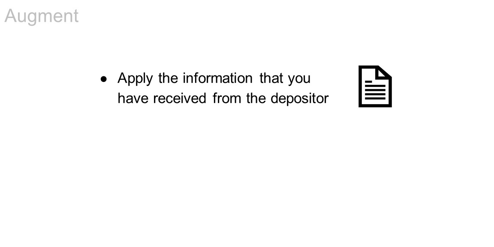
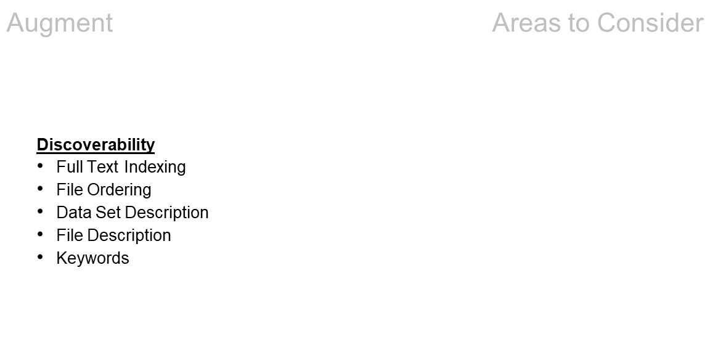
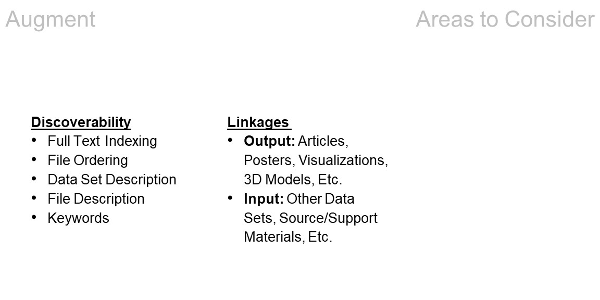
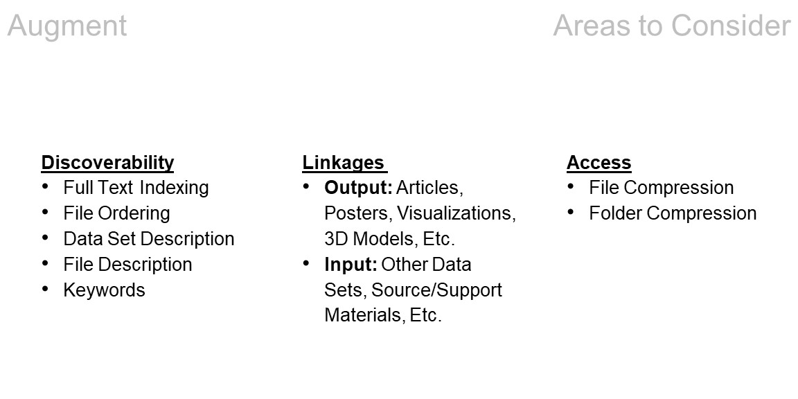
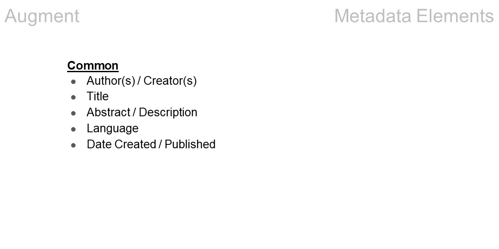
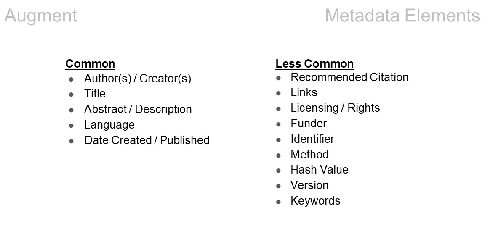

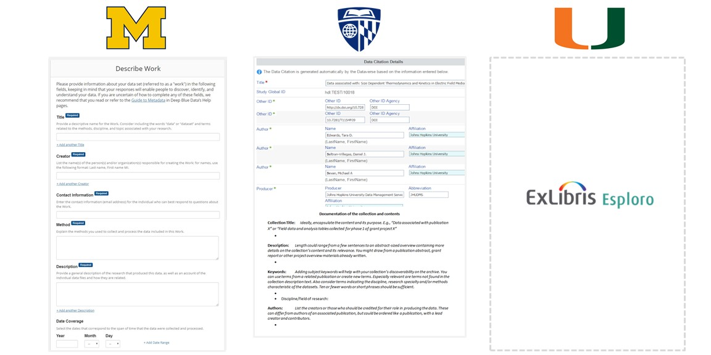
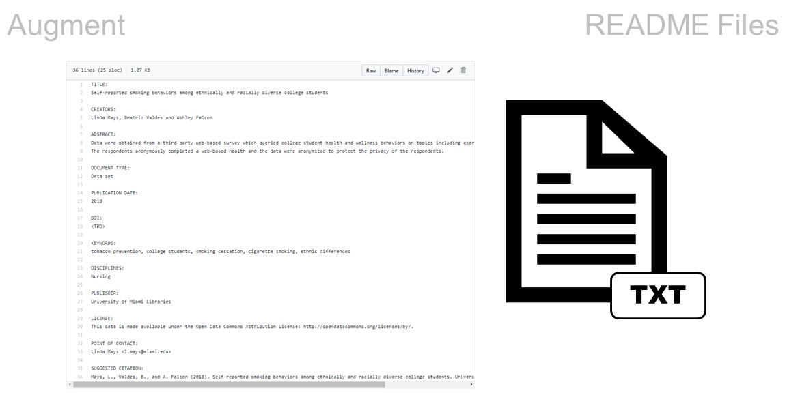
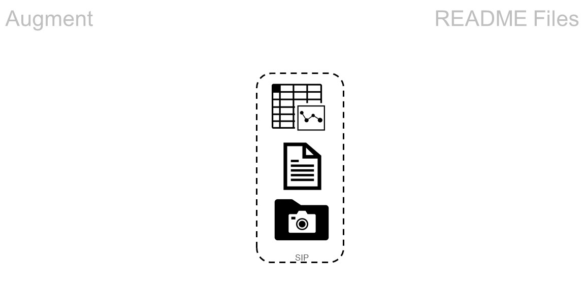
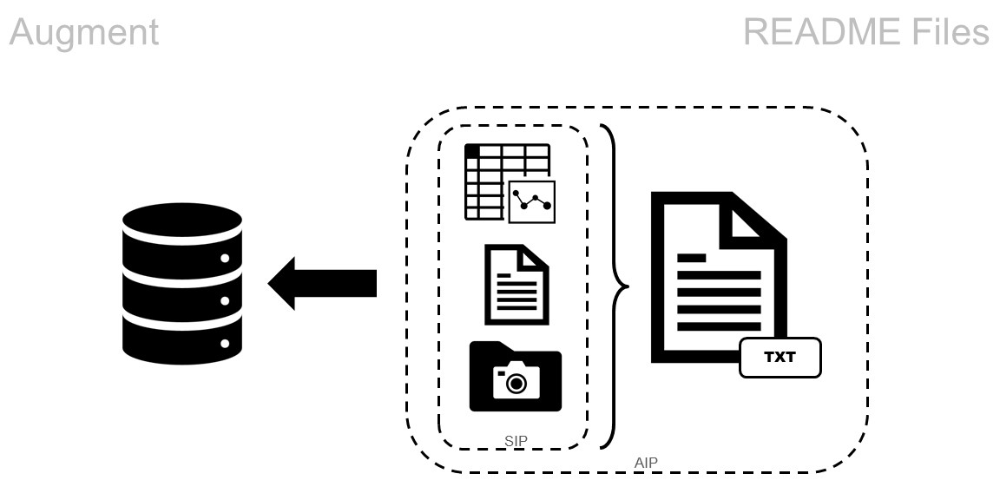
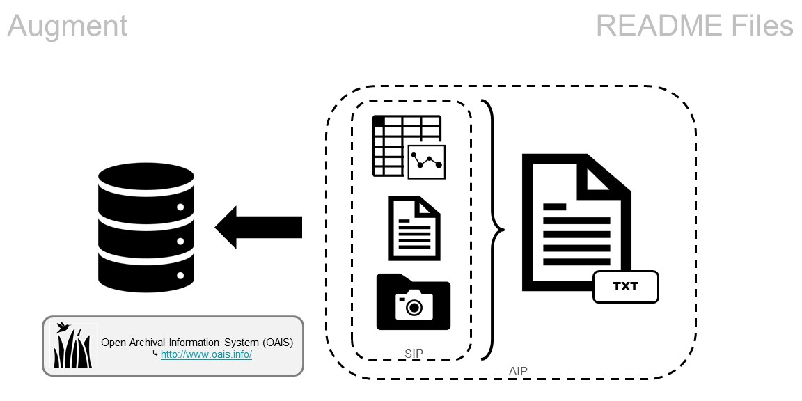
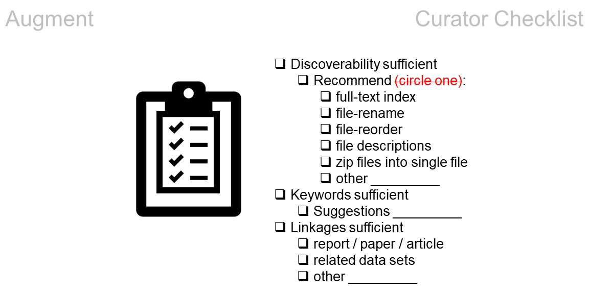
C ➾ U ➾ R ➾ A ➾ T ➾ E ➾ (D)
⇓
TRANSFORM
TRANSFORM
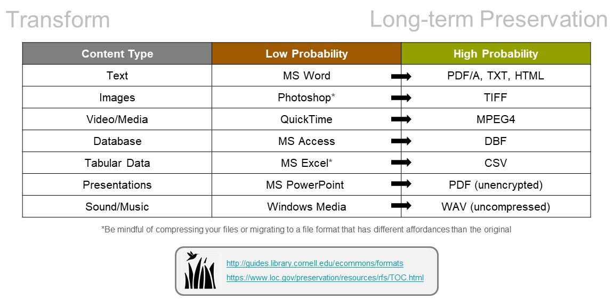
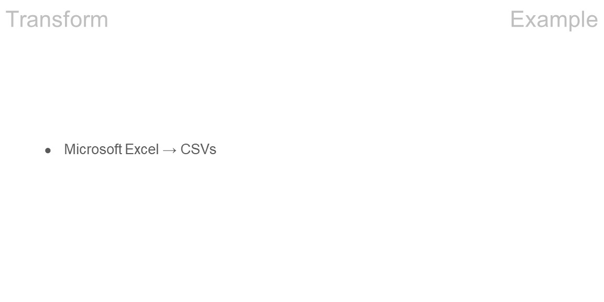
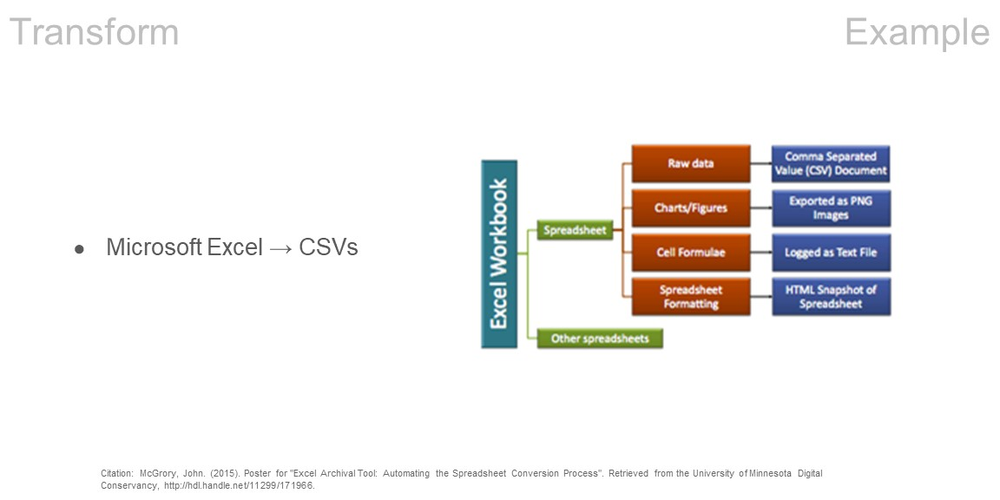

C ➾ U ➾ R ➾ A ➾ T ➾ E ➾ (D)
⇓
EVALUATE
EVALUATE
C ➾ U ➾ R ➾ A ➾ T ➾ E ➾ (D)
⇓
DOCUMENT
DOCUMENT
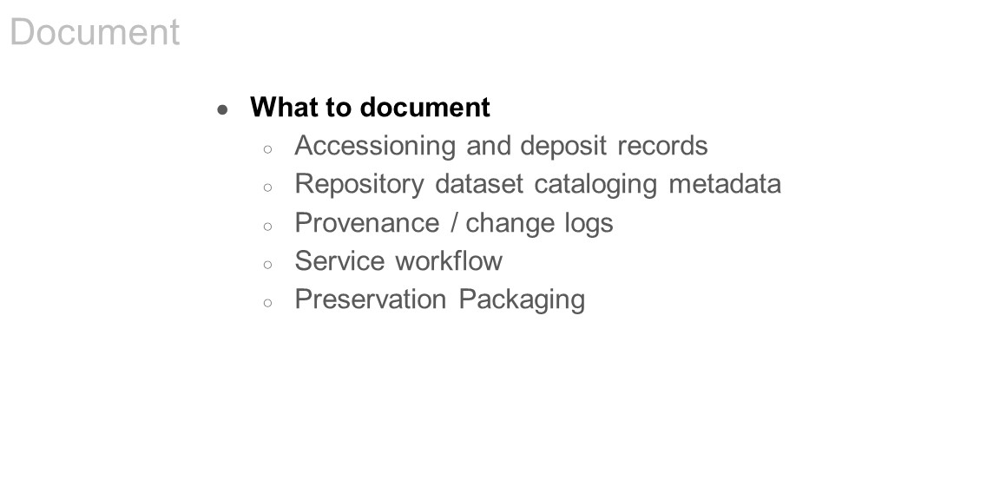
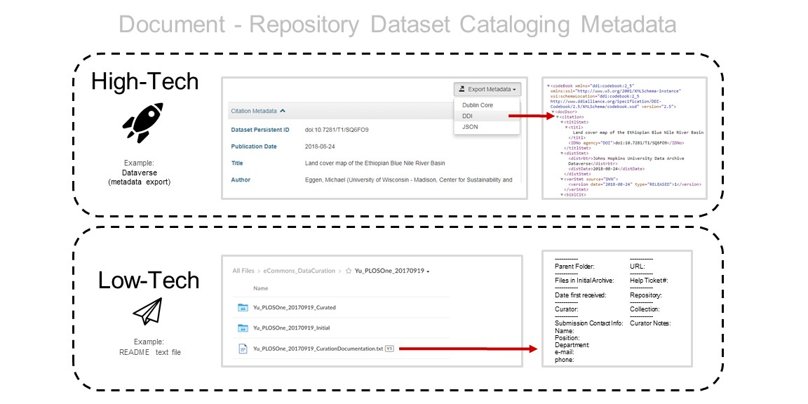
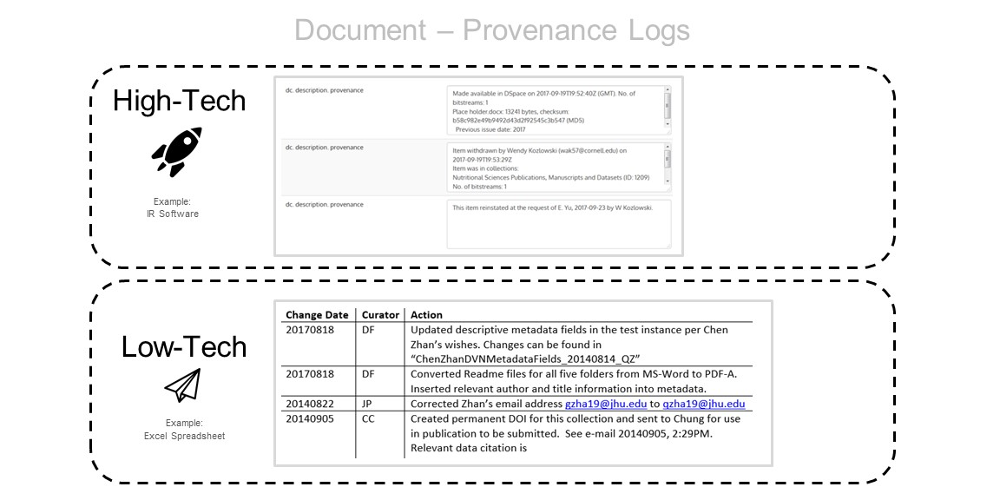
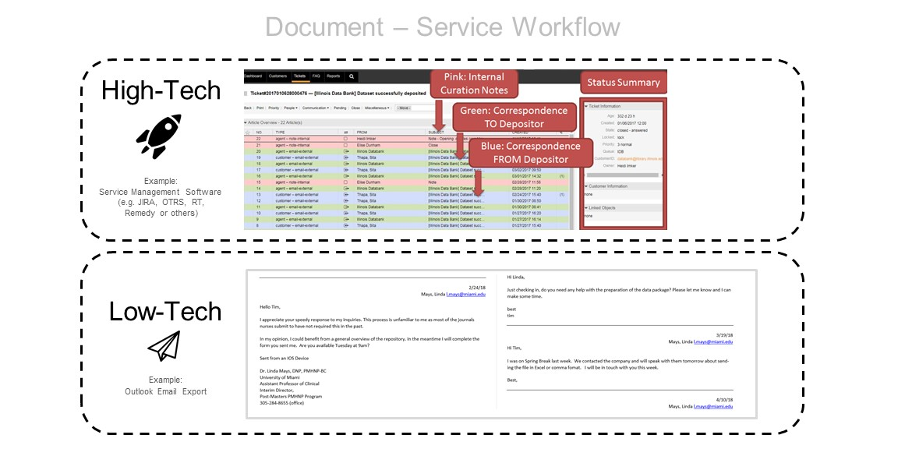
Thanks!